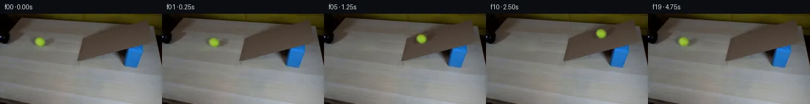

![首帧]()

Round 00
2026-11-04T21:02:12.060727+00:00像素候选变化代码 +257/−0inspection 更新
pixels 97dd78bdfd91b0bb · code 6f87519e4a357ced
查看本轮 generate.py 真实 diff
--- previous/generate.py
+++ current/generate.py
@@ -0,0 +1,257 @@
+"""PixelWorld continuation using local source pixels and analytic rolling.
+
+No image display, external data, learned models, or rendering engine is used.
+Run from the workspace: python generate.py
+"""
+from pathlib import Path
+import json
+import numpy as np
+from PIL import Image, ImageDraw
+from scipy.ndimage import gaussian_filter, map_coordinates
+from scipy.sparse import lil_matrix
+from scipy.sparse.linalg import spsolve
+from artifact_io import save
+
+ROOT = Path(__file__).resolve().parent
+SOURCE = np.asarray(Image.open(ROOT / "first_frame.png").convert("RGB"))
+H, W = SOURCE.shape[:2]
+YY, XX = np.mgrid[:H, :W].astype(float)
+CX, CY = 62.8, 44.5
+SPEED, ACCEL = 76.0, 52.0
+ENTRY = (127.0 - 63.0) / SPEED
+TURN = ENTRY + SPEED / ACCEL
+EXIT = ENTRY + 2 * SPEED / ACCEL
+
+
+def harmonic_fill(values, mask):
+ """Solve the discrete Dirichlet Laplacian in a small missing region."""
+ coordinates = np.argwhere(mask)
+ indexes = np.full(mask.shape, -1, dtype=int)
+ indexes[mask] = np.arange(len(coordinates))
+ matrix = lil_matrix((len(coordinates), len(coordinates)), dtype=float)
+ rhs = np.zeros((len(coordinates), values.shape[-1]))
+ for i, (y, x) in enumerate(coordinates):
+ matrix[i, i] = 4.0
+ for yy, xx in ((y - 1, x), (y + 1, x), (y, x - 1), (y, x + 1)):
+ if mask[yy, xx]:
+ matrix[i, indexes[yy, xx]] = -1.0
+ else:
+ rhs[i] += values[yy, xx]
+ result = values.copy()
+ result[mask] = spsolve(matrix.tocsr(), rhs)
+ return result
+
+
+def prepare_assets():
+ source = SOURCE.astype(float)
+ # Numerical RGB readings show a broad shadow around the original ball.
+ region = ((XX - 66.0) / 23.0) ** 2 + ((YY - 44.5) / 11.0) ** 2 < 1.0
+ clean = harmonic_fill(source, region)
+ # Supply a little source-derived table grain inside the harmonic repair.
+ highpass = source - gaussian_filter(source, (1.1, 1.1, 0))
+ grain = np.roll(highpass, -40, axis=1)
+ edge_weight = np.clip(1.0 - (((XX - 66) / 23) ** 2 +
+ ((YY - 44.5) / 11) ** 2), 0, 1)
+ clean += grain * (0.4 * edge_weight[..., None])
+ clean[~region] = source[~region]
+
+ # Ball matte comes from its green chroma against the neutral tabletop.
+ radius2 = ((XX - CX) / 9.1) ** 2 + ((YY - CY) / 7.7) ** 2
+ nz = np.sqrt(np.clip(1.0 - radius2, 0, 1))
+ chroma = source[..., 1] - source[..., 0]
+ background_chroma = clean[..., 1] - clean[..., 0]
+ alpha = np.clip((chroma - background_chroma) /
+ (45.0 * (0.60 + 0.40 * nz)), 0, 1)
+ support = np.clip((1.20 - radius2) / 0.18, 0, 1)
+ alpha *= support
+ alpha = gaussian_filter(alpha, 0.28)
+ alpha[radius2 > 1.22] = 0
+
+ # A multiplicative RGB shadow, interpolated only behind the ball matte.
+ ratio = np.clip(source / np.maximum(clean, 1), 0.55, 1.06)
+ ratio = harmonic_fill(ratio, alpha > 0.035)
+ ratio = gaussian_filter(ratio, (0.35, 0.35, 0))
+ ratio[~region] = 1.0
+ shadowed = clean * ratio
+
+ foreground = (source - shadowed * (1 - alpha[..., None])) / np.maximum(
+ alpha[..., None], 0.035)
+ foreground = np.clip(foreground, [32, 55, 12], [200, 225, 130])
+ # Normalized convolution avoids introducing background colors at the rim.
+ weights = gaussian_filter(alpha, 1.3)
+ smooth = gaussian_filter(foreground * alpha[..., None], (1.3, 1.3, 0)) / np.maximum(
+ weights[..., None], 0.001)
+ detail = (foreground - smooth) * np.clip(alpha[..., None] / 0.6, 0, 1)
+ detail[alpha < 0.035] = 0
+ detail = gaussian_filter(detail, (0.22, 0.22, 0))
+ return clean, alpha, smooth, detail, ratio, region
… diff truncated; 170 more lines …